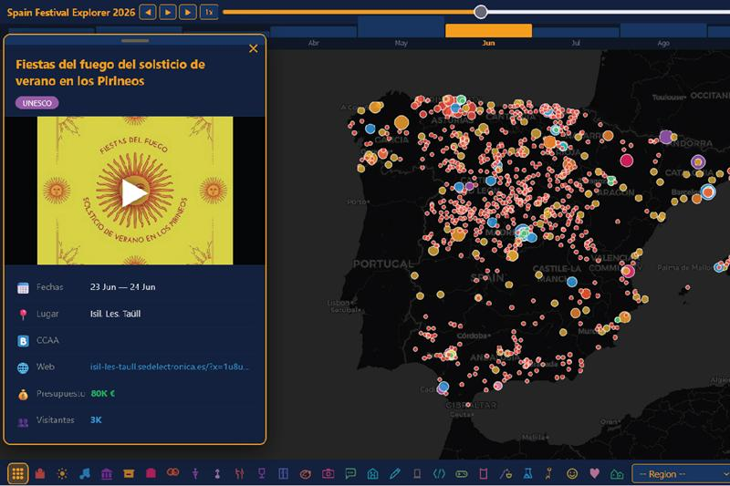

The Spanish Festival Industry Analysis is an interactive dashboard mapping over 4,500 annual festivals across Spain's 17 autonomous communities, spanning music, gastronomy, cultural heritage, cinema, and religious traditions. Each event is geo-referenced and enriched with attendance data, economic footprint estimates, and historical series dating back to 2010.
Regional heatmaps reveal concentration patterns across provinces, while category filters expose how festival typology correlates with tourism flows, seasonal demand peaks, and local GDP contribution. Key indicators — total attendees, average event duration, and infrastructure spend — are surfaced as headline KPIs alongside trend lines for the post-pandemic recovery period.
The tool is designed for cultural policy analysts, regional tourism boards, and event-industry investors who need a data-driven overview of Spain's festival ecosystem, its growth trajectory, and the untapped potential of underserved inland provinces.

Click the image above to open the application in full screen.